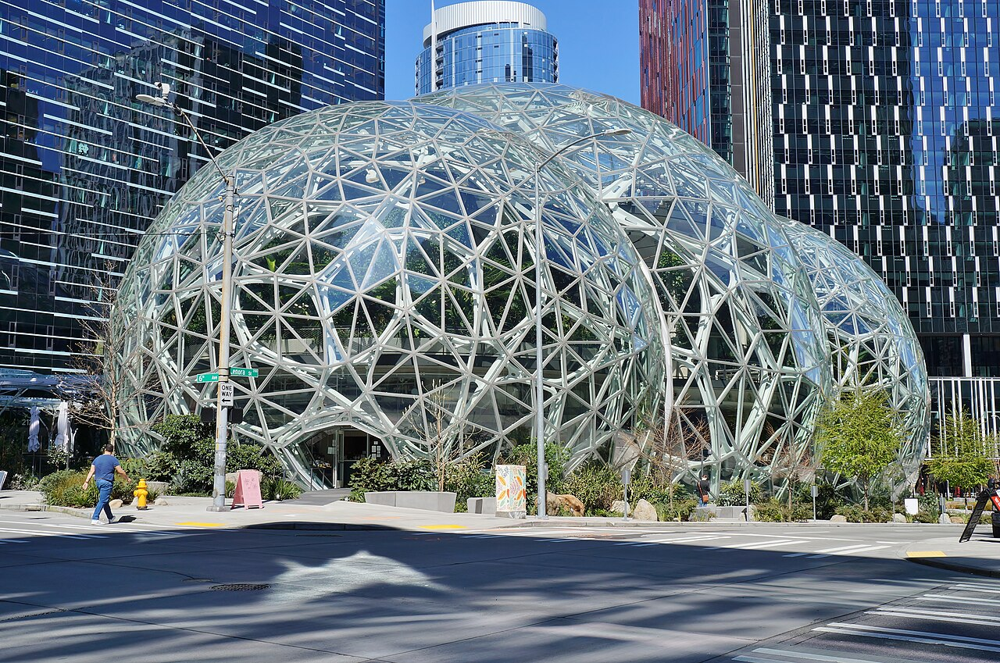

Amazon's operating margin reached a high in the third quarter as capital spending more than doubled


Amazon's sales rose 12.1% to $201.9 billion in the third quarter, and its operating margin reached 13.9%, the highest of the twelve quarters covered here. Net income slipped 2.4% to $20.7 billion. Cash spent on property and equipment rose to $77.3 billion, which turned free cash flow into an outflow of $34.8 billion for the quarter.
Sales grew and AWS accelerated
Revenue of $201.9 billion was 12.1% above the third quarter of 2025. Growth was 19.6% in the second quarter and 16.6% in the first. Amazon's earnings release says Prime Day timing shifted this year: the event fell in the second quarter for most large countries, while in 2025 it fell entirely in the third.
AWS, the cloud business, grew fastest. Its segment sales rose 39% to $46.0 billion, according to the earnings release, and made up about a fifth of the company's sales. The 10-Q says the growth mainly reflects increased customer usage, partly offset by pricing changes driven mainly by long-term customer contracts.
Operating margin reached a high; net income slipped
Operating income rose 61.2% to $28.1 billion. Operating margin widened from 9.7% to 13.9%, and gross margin from 50.8% to 53.2%. AWS operating income was $17.8 billion, against $11.4 billion a year earlier.
Net income still fell, by 2.4%, and diluted earnings per share went from $1.95 to $1.89. Below operating income, Amazon swung from $10.7 billion of non-operating income a year earlier to a $1.2 billion loss. The earnings release says the decrease was driven primarily by pre-tax gains of $9.5 billion in the third quarter of 2025 from its investments in Anthropic. The effective tax rate was 23.0%.
Capital spending outran operating cash flow
Cash from operations rose 19.4% to $42.4 billion. Cash spent on property and equipment rose faster, by 120.1% to $77.3 billion, or 182% of operating cash flow. Free cash flow, defined here as operating cash flow minus capital spending, was an outflow of $34.8 billion, after outflows of $8.8 billion in the second quarter and $18.2 billion in the first.
Debt rose to $181.3 billion at September 30, from $55.3 billion a year earlier, while cash and marketable securities were $114.2 billion. Total assets reached $1,243.4 billion. Amazon paid no dividends and bought back no shares in the period.
Twelve quarters of figures
Free cash flow here is cash from operations minus purchases of property and equipment, so it differs from the company's own measure, which also subtracts proceeds from sales and incentives and covers twelve months. Debt is long-term debt including the current portion, as on the site's company pages. Cash includes marketable securities. Amazon does not report research and development as a separate line, so it is left out.
Sources: Form 10-Q (SEC EDGAR) · Form 10-Q filing index · EDGAR company facts for Amazon · Amazon third-quarter 2026 earnings release (Exhibit 99.1). More figures for Amazon are on its company page.